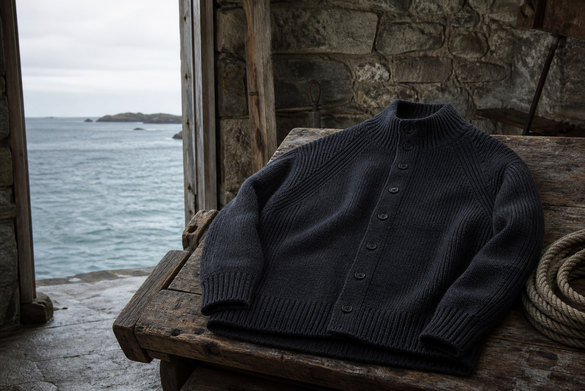

촘촘한 짜임
바람을 막고 형태를 오래 유지하도록 밀도 있게 짠 울 조직.

Guernsey · British Isles
건지울른스는 영국 건지섬의 피셔맨 니트에서 시작해 오래 입을수록 깊어지는 한 벌을 만듭니다.
대표 제품 보기바람과 소금, 그리고 울
거친 바람과 차가운 물결을 마주하던 건지섬의 어부들에게 니트는 장식이 아닌 도구였습니다. 촘촘한 짜임과 단단한 마감, 움직임을 고려한 어깨선은 그 쓰임에서 태어났습니다.
건지울른스는 그 실용적인 아름다움을 오늘의 리듬으로 옮깁니다. 원형의 태도는 지키되, 일상에 자연스럽게 스며드는 균형을 찾습니다.

바람을 막고 형태를 오래 유지하도록 밀도 있게 짠 울 조직.
팔의 움직임을 따라가는 리브 디테일과 입체적인 어깨선.
입고 돌볼수록 몸에 맞게 자리 잡는 천연 울의 질감.
The first collection
하나의 형태, 세 가지 바다의 색. 소재와 생산 정보는 정식 출시 전 순차적으로 공개할 예정입니다.
Notes from the shore
작업복의 구조에서 시작된 디테일을 살펴봅니다.
자주 세탁하지 않고도 니트를 산뜻하게 돌보는 법.
잉크 네이비, 로우 오트, 씨 모스가 된 풍경들.
Stay by the shore
출시 일정, 소재 이야기, 오래 입는 법을 천천히 전하겠습니다.